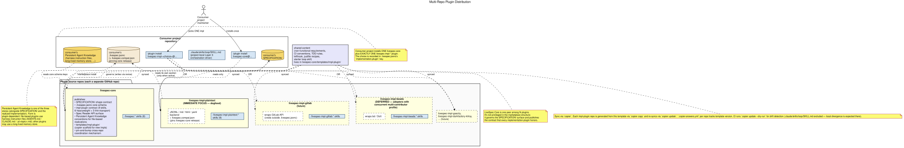
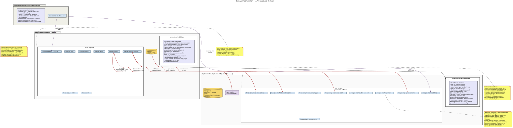
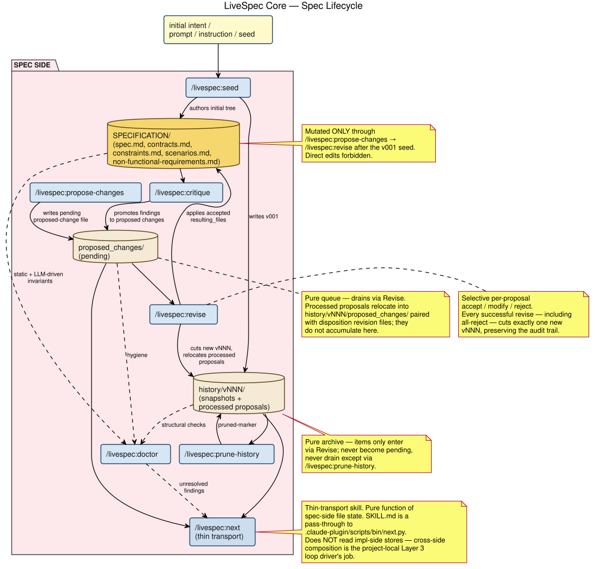
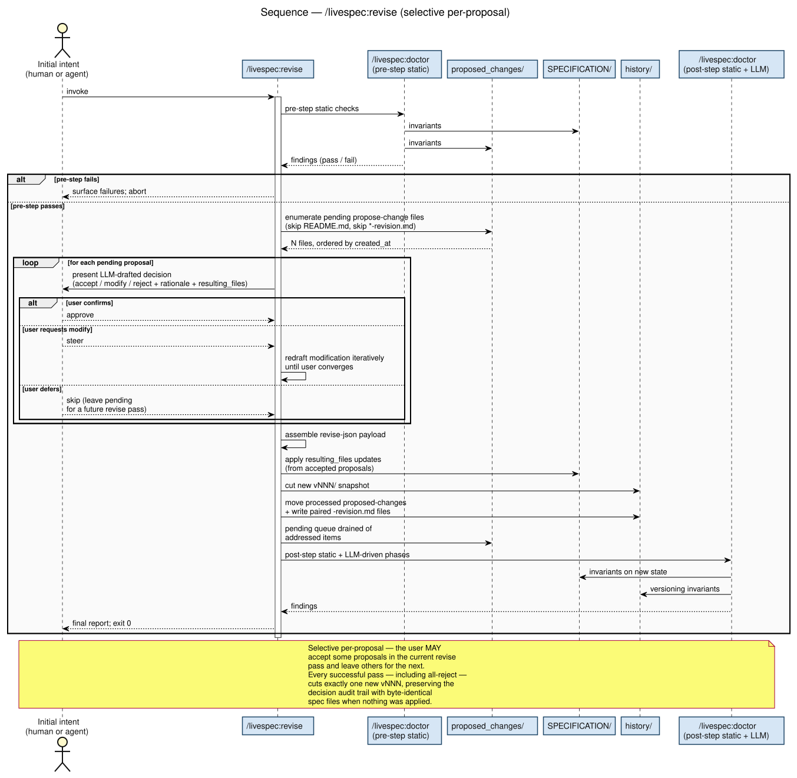
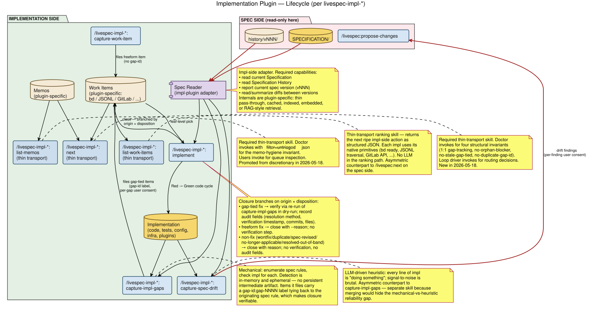
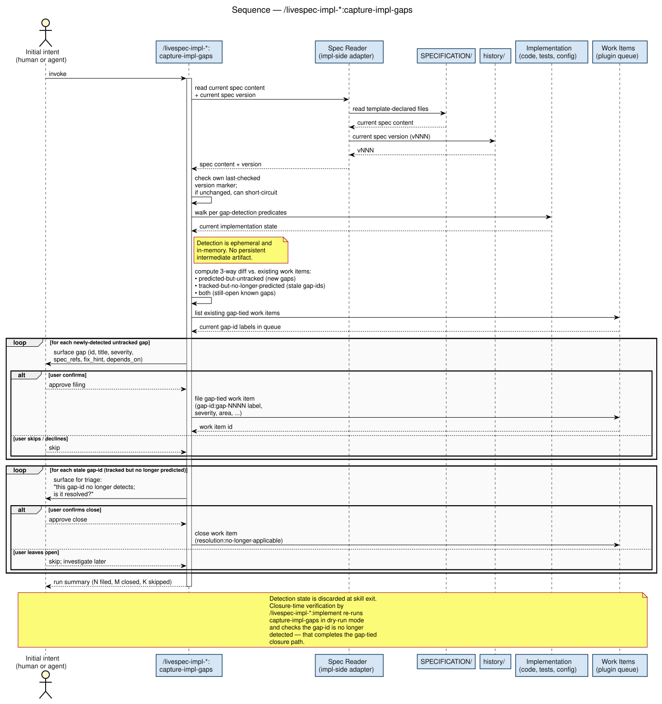
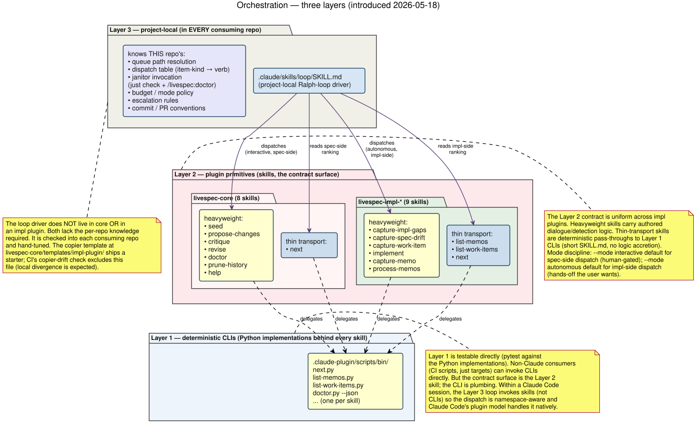
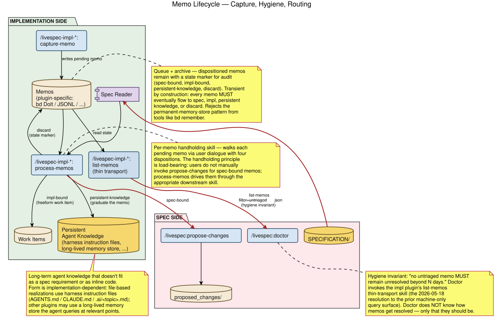

This document captures findings from an extended brainstorming session that re-examined the LiveSpec architecture from first principles and then followed through to resolve every load-bearing open question — most notably the impl-to-spec drift direction (the "elephant") that the 2026-05-11 snapshot flagged as unresolved. The verbatim transcript is preserved as a companion HTML file at conversation-transcript.html.
tool-agnostic-workflow.md. That document is the source of truth for those concepts; this document is the LiveSpec-specific instantiation, using livespec-core / livespec-impl-* / /livespec:* names. When the two disagree, the tool-agnostic doc wins and this one gets regenerated to match.
copier (2026-05-18 resolution): livespec-core/templates/impl-plugin/ holds the canonical scaffolding (justfile, lefthook, mise, ruff/pyright config, GitHub Actions workflows, starter .claude/skills/loop/SKILL.md, etc.); each livespec-impl-* repo is generated from that template via copier copy and re-syncs via copier update with a .copier-answers.yml tracker. Concerns about CI complexity and agent context bleed outweighed the monorepo content-sharing benefits.
livespec plugin becomes livespec-core. Implementation plugins use the pattern livespec-impl-<X> where X is the tracking mechanism (not substrate). Catalog: livespec-impl-plaintext, livespec-impl-beads, livespec-impl-gascity, livespec-impl-darkfactory-kilroy, livespec-impl-gitlab, etc.
livespec-impl-plaintext consolidates formats. One plugin handles md / html / jsonl / yaml backends. Format choice lives in .livespec.jsonc. Format migration is a free bonus capability (one plugin owns readers and writers for all formats).
.livespec.jsonc as shared cross-plugin config with per-plugin section ownership. Root is additionalProperties: true. livespec-core owns core keys; each impl plugin owns a top-level key named for the plugin. Secrets MUST NOT live here.
livespec-impl-plaintext going forward; livespec-impl-beads remains a first-class implementation for adopters with concurrent multi-contributor profiles.
/livespec-impl-*:capture-spec-drift. Asymmetric counterpart to capture-impl-gaps, not a mirror image — see the Gap-vs-drift asymmetric naming section.
capture-impl-gaps.
.ai/<topic>.md convention to one of the three canonical stores (alongside the Specification and the Implementation). The form is implementation-dependent: file-based plugins typically use harness instruction files (CLAUDE.md / AGENTS.md / .ai/<topic>.md); other plugins may use a long-lived memory store the agent queries at relevant points.
--reason, no verification step). Restores the old observation-flow "Path B — manual create, freeform issue" pattern lost in the tool-agnostic refactor.
capture-impl-gaps collapses refresh-gaps + plan. Detection is ephemeral (in-memory). The persistent current.json intermediate artifact disappears entirely. Per-gap consent dialogue happens inside the unified skill. Verification on closure re-runs the skill in dry-run mode and checks the gap-id is no longer detected.
propose-changes is the renamed singular propose-change. Plural form acknowledges existing 1-to-N reality (one file can already carry multiple ## Proposal sections). Singular name was misleading.
critique survives as a separate skill. Its role refined: surface observations based on observing the specification (spec-internal issues: ambiguity, contradiction, undefined terms, dangling references). NOT observation of the implementation — that is capture-spec-drift's job and lives on the impl side. Its 1-to-N cardinality and no-user-intent posture justify keeping it separate from propose-changes.
.claude/skills/loop/SKILL.md in every livespec-using repo (livespec-core, livespec-impl-plaintext, and every consumer project). NOT a livespec-core skill and NOT an impl-plugin skill — it composes primitives from both layers in a project-specific way (queue path, dispatch table, janitor command, budget/mode policy). Each repo's loop is hand-tuned; the copier template ships a reasonable starter. Architecture has three layers: Layer 1 deterministic CLIs under .claude-plugin/scripts/bin/; Layer 2 plugin primitives (the skills); Layer 3 project-local composition (the loop driver).
livespec-impl-plaintext pins a specific livespec-core release tag in livespec.compat.json (Obsidian-style per-plugin compatibility manifest). Loop B (impl-plaintext) runs against the pinned core, never against HEAD. When core ships a new release, a bump-pin PR fires in impl with the contract migration as its acceptance criterion. Doctor enforces contract-version compatibility as an invariant. No third coordinator repo. Plaintext-only focus for now; livespec-impl-beads deferred (still in the catalog for future adopters with concurrent multi-contributor profiles).
next, promotes list-memos from discretionary to required, adds list-work-items). Spec side: 7 → 8 (adds next). The three new impl skills and livespec:next are thin transports; the rest remain heavyweight. Backend-variability asymmetry: spec side does NOT need symmetric list-proposed-changes / list-history skills because the spec backend is fixed (the canonical SPECIFICATION/ tree shape); direct filesystem reads suffice. The impl side needs skill-wrapped queries because impl backends are pluggable (plaintext / beads / gitlab / ...).
blocked_by resolves to an existing item), no-stale-gap-tied (a gap-tied open item whose gap no longer detects must close via non-fix disposition), no-duplicate-gap-id (no two open items claim the same gap-id). Plus contract-version compatibility (Decision 16). Staleness of durable-pending items is explicitly NOT a doctor invariant — that's a productivity heuristic, lives in next.
next (durable-pending).
The 2026-05-11 architecture summary is preserved verbatim under archive/2026-05-11-architecture-summary/. The post-elephant turns reshaped enough load-bearing material that this document is a clean rewrite rather than an edit. Major changes:
| Area | 2026-05-11 snapshot | Post-elephant (this document) |
|---|---|---|
| Impl plugin skill count | 5 skills (capture-spec-gaps, implement, capture-memo, list-memos, process-memos) |
6 canonical skills (capture-impl-gaps, capture-spec-drift, capture-work-item, implement, capture-memo, process-memos). list-memos is now plugin-discretionary (each plugin may expose user-facing search if useful); the doctor-hygiene query lives in the machine-readable contract surface. |
| Impl-to-spec drift direction | Flagged as unresolved follow-up ("the elephant") | Resolved via capture-spec-drift — a separate impl-side skill, asymmetric counterpart to capture-impl-gaps, that routes findings to /livespec:propose-changes as a cross-boundary handoff. |
| Spec access from impl-side skills | Ad-hoc per skill | Unified through the Spec Reader impl-side adapter. Plugin-specific internals; uniform required capabilities. |
| Persistent agent knowledge | .ai/<topic>.md convention only |
Promoted to a first-class store. File-based realizations use harness instruction files; other plugins may use a long-lived memory store. Plugin's choice. |
| Direct work-item filing | Implicit / missing | capture-work-item is the explicit freeform-filing path for bugs, refactors, and tactical tasks. Closes via the freeform path. |
| Box taxonomy | "Data stores are cylinders" (single category) | Stores (canonical, monolithic — gold cylinders) distinguished from queue/archives (discrete items with lifecycle — tan cylinders). Three stores; four queue/archives. See the tool-agnostic doc for the full distinction. |
| Skill naming | capture-spec-gaps |
capture-impl-gaps — gaps are deficits in the implementation relative to the spec; the deficit belongs to the impl, not the spec. Aligns with the gap-vs-drift asymmetric naming. |
| Closure semantics | Implicit in implement |
Three explicit closure paths: gap-tied fix (verify + audit fields), freeform fix (simple reason), non-fix (administrative — wontfix / duplicate / spec-revised / no-longer-applicable / resolved-out-of-band — close with reason, no verification). |
| Diagram vocabulary | Human / Agent actor split; verb-phrase skill names; no Spec Reader | Single yellow "initial intent" input (actor identity not load-bearing); gold-vs-tan cylinder distinction; pale-lavender Spec Reader component; thick red cross-boundary edges. |
The plugins are distributed as separate GitHub repos, each registering as a Claude Code marketplace plugin. Consumer projects install livespec-core plus exactly one livespec-impl-* plugin via the standard marketplace flow.
The marketplace.json schema does support multiple plugins from a single repo's subdirectories, but the multi-repo decision was driven by:
The cost paid is the shared-content sync mechanism. Non-functional-requirement sections (TDD workflow, code style, CI conventions, lint rules, Python pins, lefthook setup) genuinely live in multiple plugins. The sync mechanism is open (subtree / pinned package / generator / etc.); the existence of shared content survives the decision.

LiveSpec Core publishes a documented contract in SPECIFICATION/contracts.md that implementation plugins must honor. The contract has these sections:
proposed_changes/ and history/vNNN/ ownership, spec_root resolution rules..livespec.jsonc shape and per-plugin section ownership./livespec:* command's signature.livespec-impl-* MUST expose to be considered LiveSpec-compatible. Includes the Spec Reader required-capability surface, the untriaged-memo machine query, and the Persistent Agent Knowledge conventions for file-based realizations.
| Command | Weight | Purpose |
|---|---|---|
/livespec:seed | heavy | Initialize a new spec tree |
/livespec:propose-changes | heavy | Author one or more proposed changes (plural rename of today's propose-change) |
/livespec:critique | heavy | Surface observations based on observing the spec; spec-internal analysis only |
/livespec:revise | heavy | Process pending proposed-changes; cut new history/vNNN. Selective per-proposal — user can address a subset and leave the rest pending. |
/livespec:doctor | heavy | Spec invariants (static + LLM-driven), memo-hygiene invariant, four work-item structural invariants (1:1 gap-tracking, no-orphan-blocker, no-stale-gap-tied, no-duplicate-gap-id), and contract-version compatibility — all via the impl plugin's list-memos / list-work-items thin-transport skills |
/livespec:prune-history | heavy | Bound history size; collapse oldest vNNN entries |
/livespec:help | heavy | Overview + routing |
/livespec:next (new) | thin | Ranks the most ripe spec-side action (proposals queue, history recency, doctor findings). Returns structured JSON. Pure function of file state; no LLM in the ranking path. Does NOT read impl-side stores — cross-side composition is the project-local loop driver's job. |


/livespec:revise with pre-step + post-step doctor checks, selective per-proposal acceptance, and the user-defer branch that leaves unaddressed proposals pending.Every livespec-impl-* plugin MUST expose these nine skills under its own namespace prefix. Six are heavyweight authored skills (dialogue, detection logic, judgment calls); three are thin-transport skills (CLI pass-through, no logic accretion).
| Command | Weight | Purpose |
|---|---|---|
/livespec-impl-*:capture-impl-gaps | heavy | Detect spec → impl gaps mechanically via the Spec Reader; file labeled / categorized gap-tied work items (per-gap user consent). Collapses today's refresh-gaps + plan pair into one ephemeral-detection skill. |
/livespec-impl-*:capture-spec-drift | heavy | Detect impl → spec drift heuristically (LLM-driven); file findings as proposed changes via /livespec:propose-changes (cross-boundary handoff). Asymmetric counterpart to capture-impl-gaps, not a mirror image. Resolves the pre-elephant unresolved direction. |
/livespec-impl-*:capture-work-item | heavy | Freeform direct filing of an impl-side work item — bugs, refactors, tactical tasks. No gap-id; closes via the freeform path. Bypasses gap detection and memo ceremony. |
/livespec-impl-*:implement | heavy | Drive Red → Green for a single work item; verify via dry-run re-detection (gap-tied); close. Three closure paths: gap-tied fix (verify + audit), freeform fix (simple reason), non-fix (administrative reason). |
/livespec-impl-*:capture-memo | medium | Low-friction free-text deposit of an in-flight observation that the user is not yet ready to classify. Transient by construction. |
/livespec-impl-*:process-memos | heavy | Per-memo handholding dialogue: spec-bound (→ propose-changes, cross-boundary) / impl-bound (→ freeform work item) / persistent-knowledge (→ Persistent Agent Knowledge store) / discard. |
/livespec-impl-*:list-memos (promoted) | thin | Required (was discretionary). Supports --filter (e.g., --filter=untriaged) and --json output. Consumed by doctor's memo-hygiene invariant and by users for queue inspection. |
/livespec-impl-*:list-work-items (new) | thin | Required. Supports filter flags (--gap-tied, --blocked, --with-gap-id, etc.) and --json output. Consumed by doctor's four work-item structural invariants, by the loop driver for routing decisions, and by users for queue inspection. |
/livespec-impl-*:next (new) | thin | Required. Ranks the most ripe impl-side action using whatever native primitives the backend provides (bd ready for beads, JSONL traversal for plaintext, etc.). Returns structured JSON: { action, work_item_ref, urgency, reason }. Pure function of impl-side state; no LLM in the ranking path. |
Cross-boundary handoffs (red edges in diagrams):
capture-spec-drift → /livespec:propose-changes (drift findings).process-memos → /livespec:propose-changes (spec-bound disposition)./livespec:doctor → /livespec-impl-*:list-memos --filter=untriaged --json (memo-hygiene invariant; replaces the pre-2026-05-18 machine-only query surface)./livespec:doctor → /livespec-impl-*:list-work-items --json (work-item structural invariants; new in 2026-05-18)./livespec:next and /livespec-impl-*:next to compose cross-side recommendations.The impl-side query skills (list-memos, list-work-items, next) exist because impl backends are pluggable — plaintext stores JSONL, beads uses Dolt, gitlab uses the GitLab API — and cross-side consumers (doctor, the loop driver, core's next) need a uniform abstraction over those variants. The skill is that abstraction.
The spec side has the opposite property: the spec backend is fixed (the canonical SPECIFICATION/ tree shape). Doctor's static phase already reads SPECIFICATION/proposed_changes/ and SPECIFICATION/history/ directly from the filesystem — no abstraction needed. Symmetric list-proposed-changes / list-history skills would be pure ceremony. This is the principled reason the spec-side surface grows only by next, while the impl-side surface grows by three.

capture-impl-gaps and capture-spec-drift are asymmetric counterparts; implement drains the work-item queue regardless of origin and closes via the three-way branch.
/livespec-impl-*:capture-impl-gaps with Spec Reader, in-memory detection, per-gap consent dialogue, and stale-gap-id triage.
The autonomous-loop driver — the thing that picks the next ripe work item, dispatches the appropriate skill, runs the janitor, commits, and loops — lives at a third layer, distinct from livespec-core and from any impl plugin. It is a project-local skill at .claude/skills/loop/SKILL.md checked into every livespec-using repo. Each repo (livespec-core, livespec-impl-plaintext, and every consumer project) ships its own, tuned to that repo's specifics.
Why neither livespec-core nor an impl plugin can ship the loop driver:
just check invocation, dispatch table from item-kind to verb, budget and escalation policy, worktree convention. Hard-coding any of that breaks every consumer; surfacing all of it as configuration just relocates project-local state.The three-layer architecture:
| Layer | Lives in | Examples |
|---|---|---|
| Layer 1 — deterministic CLIs | Published with each plugin under .claude-plugin/scripts/bin/ | next.py, list-memos.py, list-work-items.py, doctor.py --json |
| Layer 2 — plugin primitives (skills) | livespec-core skills + impl-plugin skills; the contract surface | Heavyweight authored skills (capture-impl-gaps, implement, propose-changes, revise, ...) + thin-transport skills (next, list-memos, list-work-items) |
| Layer 3 — project-local composition | .claude/skills/loop/SKILL.md in each consuming repo | Project-tuned dispatch + janitor invocation + budget/mode policy; hand-authored once per repo, lightly updated as the repo evolves |
The copier template at livespec-core/templates/impl-plugin/ ships a starter .claude/skills/loop/SKILL.md alongside the rest of the impl-plugin scaffolding. Generated repos inherit a reasonable default; local divergence is expected and the copier-drift CI check explicitly excludes this file.
Cross-side composition belongs at Layer 3. The loop driver invokes both /livespec:next (spec-side ranking) and /livespec-impl-*:next (impl-side ranking), then applies this project's weighting to pick the winning action. The cross-side weighting deliberately does NOT live in livespec-core — different consumer projects make different choices about whether spec evolution or impl execution is the bottleneck, and the right place for that judgment is the project itself.
Operating mode discipline: --mode interactive is the default for spec-side dispatch (spec mutations stay human-gated); --mode autonomous is the default for impl-side dispatch (the part the maintainer wants hands-off). Janitor failure is a hard gate — no commit on janitor red.

.claude/skills/loop/SKILL.md in every consuming repo and is hand-tuned. Layer 2 is the published contract surface — the skills exposed by livespec-core and impl plugins. Layer 1 is the deterministic Python CLI implementations under .claude-plugin/scripts/bin/. The loop driver invokes Layer 2 skills (heavyweight + thin); each skill delegates to its Layer 1 CLI. Cross-side composition (combining livespec:next with livespec-impl-*:next) belongs at Layer 3 because the weighting decision is per-project.The most significant conceptual move in this session: memory is transient by construction in LiveSpec, not a persistent store as in beads.
Beads' bd remember is a permanent memory-bank read by LLM harness instructions — entries accumulate indefinitely. LiveSpec rejects this: it's the junk-drawer anti-pattern. The LiveSpec invariant is every piece of state must eventually flow to one of the three canonical stores (Specification, Implementation, Persistent Agent Knowledge) or be discarded. Memos are in-flight state awaiting that resolution; the Memos box is queue + archive (dispositioned items remain with a state marker for audit).
The four process-memos dispositions encode this philosophy:
| Disposition | Action | Notes |
|---|---|---|
| spec-bound | Calls /livespec:propose-changes with the memo text as input |
The cross-namespace handoff to livespec-core; produces a proposed-change file that revise eventually consumes |
| impl-bound | Files a freeform work item in the impl plugin's queue (no gap-id label) |
Joins the same queue capture-impl-gaps and capture-work-item populate; implement picks it up and closes via the freeform fix path |
| persistent-knowledge | Graduates the memo into the Persistent Agent Knowledge store | Form is implementation-dependent: file-based plugins typically use harness instruction files (CLAUDE.md / AGENTS.md / .ai/<topic>.md); other plugins may use a long-lived memory store. Named, retrievable, explicitly graduated — avoids the junk-drawer pattern. |
| discard | Marks the memo discarded (state marker; not deletion) | The terminal disposition — closes the entry without producing a follow-on artifact. The discarded memo remains in the Memos archive for audit but no longer blocks hygiene. |
Persistent Agent Knowledge as a first-class store is the load-bearing replacement for beads-style memory-as-store. Its form is plugin-dependent. The most common realization in file-based plugins (livespec-impl-plaintext, livespec-impl-beads) is a set of harness instruction files: CLAUDE.md, AGENTS.md, and .ai/<topic>.md files referenced progressively from those harness files so context window stays bounded. Plugins backed by external trackers may instead use a long-lived memory store the agent queries at relevant points; the contract requires the slot to exist, not a specific realization.

list-memos --filter=untriaged --json thin-transport skill (2026-05-18 update — replaces the prior "machine-only" surface). Doctor knows about memos ONLY to detect-and-warn; it cannot route them itself. Persistent Agent Knowledge is the named target of the persistent-knowledge disposition.
/livespec-impl-*:process-memos showing the four dispositions in action, the doctor hygiene trigger, the Spec Reader feeding spec-vs-impl decisions, and the cross-namespace handoff for spec-bound dispositions.A spec → impl deficit is a gap; an impl → spec lag is a drift. The naming is deliberately asymmetric because the two directions are categorically different problems:
| Direction | Name | Detection character | Skill |
|---|---|---|---|
| spec → impl (deficit in implementation) | gap | Mechanical. Enumerate spec rules; check impl for each. 1:1 invariant per gap-id. | /livespec-impl-*:capture-impl-gaps |
| impl → spec (lag in specification) | drift | Heuristic (LLM-driven). Every line of impl is "doing something"; signal-to-noise is brutal. | /livespec-impl-*:capture-spec-drift |
The two are separate skills rather than one bidirectional skill because merging would hide the reliability gap between mechanical and LLM-driven detection. The bilateral framing ("impl drift" vs "spec drift") was tried and rejected: it obscured the difference. The asymmetric framing makes the structural difference visible.
This is the resolution to what the 2026-05-11 snapshot called "the elephant" — the impl-to-spec drift direction was flagged then as a load-bearing follow-up. capture-spec-drift closes that loop, routing findings to /livespec:propose-changes as the cross-boundary handoff.
Terminology choices that landed during the session, in order of arrival:
| Before | After | Reason |
|---|---|---|
livespec (plugin) | livespec-core | Conventional plugin-ecosystem pattern; unambiguous |
| (implicit "git" axis) | livespec-impl-<tracking-mechanism> | Git is the substrate, not the differentiator. Name by tracking mechanism (plaintext / beads / gitlab / etc.) |
propose-change | propose-changes | File format already 1-to-N (multiple ## Proposal: sections); singular name was misleading |
refresh-gaps + plan | capture-impl-gaps | Single skill detects + files atomically; ephemeral in-memory detection state. (Renamed from capture-spec-gaps as part of the gap-vs-drift asymmetric naming — see next row.) |
capture-spec-gaps / "Capture Impl Drift" | capture-impl-gaps | Gaps are deficits in the implementation; the deficit belongs to the impl, not the spec. Lines up with the asymmetric gap-vs-drift framing. |
| (no skill — flagged elephant) | capture-spec-drift | New first-class skill for the impl → spec direction. Resolves the unresolved follow-up. |
| (implicit / missing direct filing) | capture-work-item | Restores the freeform direct-filing path for bugs / refactors / tactical tasks lost in the tool-agnostic refactor. |
remember / memories / review-memories (beads terms) | capture-memo / process-memos | Beads' verbs don't translate to gitlab/jira/etc. backends. Generic descriptive verbs work everywhere. list-memos dropped from the canonical contract (plugin-discretionary). |
| "observation" / "staging" | memo (the noun) | "Observation" too narrow; "staging" overloaded with deployment connotation; "memo" is neutral and familiar |
| "data stores are cylinders" | stores (gold) vs queue/archives (tan) | The two categories have different invariants: stores are monolithic intent-accumulation; queue/archives are collections of discrete items with lifecycle. Doctor's hygiene targets the pending-item subset of queue/archives. |
.ai/<topic>.md convention | Persistent Agent Knowledge (store) | Promoted from convention to first-class store; harness instruction files are one realization, long-lived memory store is another. Form is plugin-dependent. |
| (impl-side adapter unnamed) | Spec Reader | Unified impl-side access surface for spec content. Required capabilities in the contract; plugin-specific internals. |
| Gastown | Gascity | Correction — the project is named Gas City |
| (implicit prescriptive vs descriptive) | "spec" vs "implementation" | The two terms carry the contrast on their own; "prescriptive" and "descriptive" descriptors dropped as redundant clutter. |
| "imperative window" | (term retired) | Folded into ordinary discussion of skill invocation; not load-bearing as its own term. |
| "materialization" | (term retired) | Doesn't earn its own concept slot in the workflow — "Seed authors initial tree" is enough. |
.livespec.jsonc — shared cross-plugin config
The file is the cross-plugin discovery point. Every plugin reads it; livespec-core reads core keys; each impl plugin reads its own top-level section. Schema is open at the root (additionalProperties: true) so plugins can extend without central coordination.
{
// owned by livespec-core
"template": "livespec",
"spec_root": "SPECIFICATION",
"pre_step_skip_static_checks": false,
// implementation activation
"implementation": {
"plugin": "livespec-impl-plaintext"
},
// pin-and-bump cross-repo coordination (Obsidian-style per-plugin
// compatibility manifest; 2026-05-18 addition). Each impl plugin
// declares which livespec-core versions it supports + the
// currently-pinned tag it runs against in the project.
"livespec-impl-plaintext": {
"format": "md",
"work_items_path": "implementation-work-items/",
"compat": {
"livespec_core": ">=2.0.0,<3.0.0",
"pinned": "v2.3.0"
}
}
// ... or "livespec-impl-beads": { "issue_prefix": "li-", "compat": { ... } }
// ... or "livespec-impl-gitlab": { "project_id": "...", "labels_prefix": "livespec/", "compat": { ... } }
}Rules in the published contract:
.livespec.jsonc is git-committed and may only contain non-sensitive configuration.The session included an honest assessment of whether beads earns its keep in livespec specifically. The math came out one-sided:
Where beads paid off: dependency-aware ready queue, status transitions, label vocabulary, search — all real conveniences.
Where beads cost more than it earned:
setup-beads.sh, bd-doctor.sh)dev-tooling/implementation/research/beads-problems.md), three with silent failure modesbd edit footgun (blocks agents; convention-enforced)The features beads provides over plaintext+git that are NOT trivially replicable in plaintext: only the Dolt concurrent-merge story, which livespec doesn't need.
livespec-impl-plaintext (JSONL format) going forward. livespec-impl-beads survives as a first-class implementation for adopters who DO have the concurrency profile (Gas City, etc.). LiveSpec ecosystem supports both; LiveSpec the project picks the one matching its actual usage.
For openbrain (sibling project), the same assessment applies — if its concurrency profile is single-author + branch-parallelism, the same calculus holds. Coordination decision, not a technical one.
A specific refinement worth marking: /livespec:critique's role is to surface observations based on observing the specification.
NOT the implementation. NOT memos. NOT observations from the world. Spec-internal analysis only: ambiguity, contradiction, undefined terms, dangling references, prose quality, NLSpec conformance. The complementary impl-side direction (impl → spec drift) is now capture-spec-drift's job — a separate skill on the impl side that reads the spec via the Spec Reader and surfaces findings as proposed changes via the cross-boundary handoff.
This sharpens the cohesion question that the session worked through. Critique survives as a separate skill (alongside propose-changes) precisely because its input domain is the spec itself — that's structurally different from authoring proposed changes from external intent.
The 2026-05-11 snapshot ended with an explicit "Unresolved follow-up" callout: capture-spec-gaps handled the spec → impl direction, but no skill captured the opposite direction (impl observably correct, spec needs to change). The candidates raised at that time were:
capture-spec-gaps mode that ran predicates against impl-as-source-of-truth.propose-changes directly).The post-elephant turns settled on the third option: /livespec-impl-*:capture-spec-drift as a first-class impl-side skill, asymmetric counterpart to capture-impl-gaps. It reads spec content via the Spec Reader (using the version + diff capabilities to anchor "what should this version of impl correspond to in the spec?") and the impl directly, runs LLM-driven analytical detection, and per finding (with user consent) routes to /livespec:propose-changes as a cross-boundary handoff that creates a proposal updating the spec.
The gap-vs-drift asymmetric naming makes the categorical difference between the two directions explicit — mechanical detection on the spec → impl side; heuristic detection on the impl → spec side. They are not mirror images, and merging them would have obscured that.
/livespec:next graduated from "pending placeholder" to first-class on 2026-05-18 — see the spec-side skill surface table above. It is a thin-transport skill that ranks the most ripe spec-side action; the impl-side counterpart /livespec-impl-*:next ranks impl-side actions independently. Cross-side composition lives in the project-local Layer 3 loop driver, not in core.
livespec-impl-beads ↔ livespec-impl-plaintext, plus livespec-impl-plaintext format-to-format switches. (Deferred until livespec-impl-beads resurrects after plaintext stabilizes.).livespec.jsonc. Each impl plugin publishes its own JSON Schema fragment; how do these get loaded for validation in practice?livespec-impl-plaintext when livespec-core ships a new release..claude/skills/loop/SKILL.md in the copier template needs concrete shape (dispatch table, budget defaults, escalation policy) so generated repos have a sane default.research/workflow-processes/
├── CLAUDE.md (unchanged)
├── architecture-summary.html (this document — LiveSpec-specific)
├── architecture-summary.md (htmlpreview wrapper)
├── tool-agnostic-workflow.md (canonical conceptual model;
│ source of truth for this doc)
├── conversation-transcript.html (cumulative verbatim transcript)
├── conversation-transcript.md (htmlpreview wrapper)
├── diagrams/ (live workflow diagrams)
│ ├── legend.{plantuml,svg}
│ ├── multi-repo-layout.{plantuml,svg}
│ ├── core-vs-impl-api-surface.{plantuml,svg}
│ ├── spec-lifecycle.{plantuml,svg}
│ ├── implementation-lifecycle.{plantuml,svg}
│ ├── memo-lifecycle.{plantuml,svg}
│ ├── orchestration-layers.{plantuml,svg} (new 2026-05-18)
│ ├── seq-capture-impl-gaps.{plantuml,svg}
│ ├── seq-process-memos.{plantuml,svg}
│ ├── seq-revise.{plantuml,svg}
│ └── tool-agnostic-workflow.{plantuml,svg}
└── archive/
├── 2026-05-09-pre-brainstorm/ (pre-brainstorm research)
│ ├── spec-vs-implementation-line.md
│ ├── workflow-diagrams.md
│ ├── beads-only-gap-storage.md
│ └── diagrams/ (proxy-rendered PlantUML)
├── 2026-05-11-architecture-summary/ (pre-elephant snapshot)
│ ├── architecture-summary.html
│ ├── architecture-summary.md
│ └── diagrams/ (snapshotted SVGs)
└── 2026-05-18-post-elephant/ (pre-orchestration / pre-thin-transport snapshot)
├── architecture-summary.html
├── architecture-summary.md
├── tool-agnostic-workflow.md
└── diagrams/ (snapshotted PlantUML + SVGs)